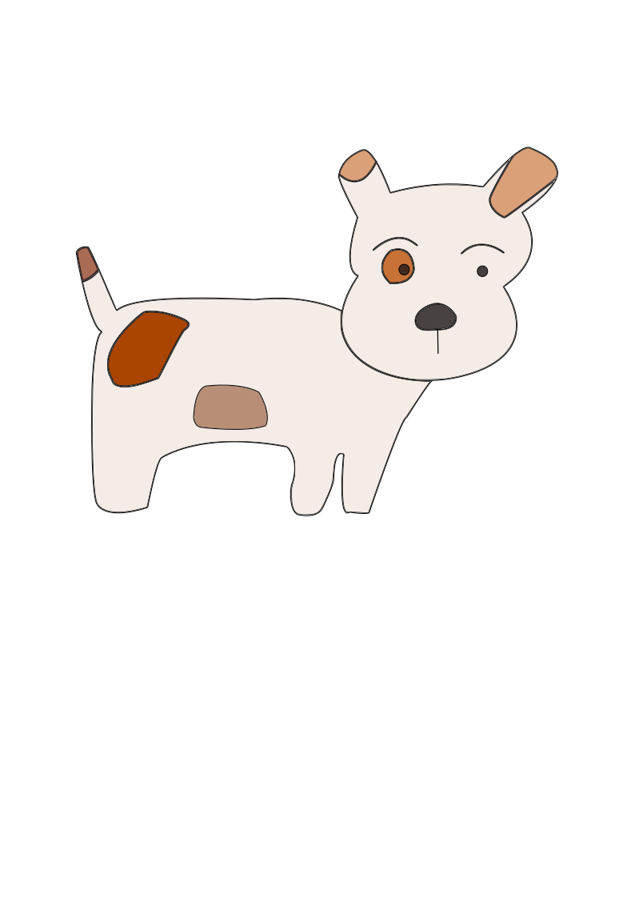
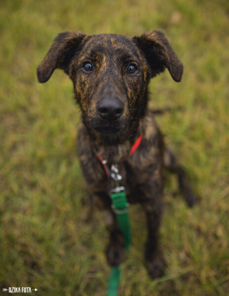
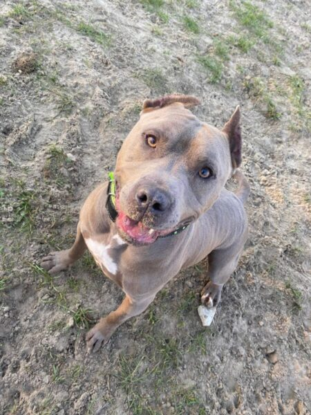
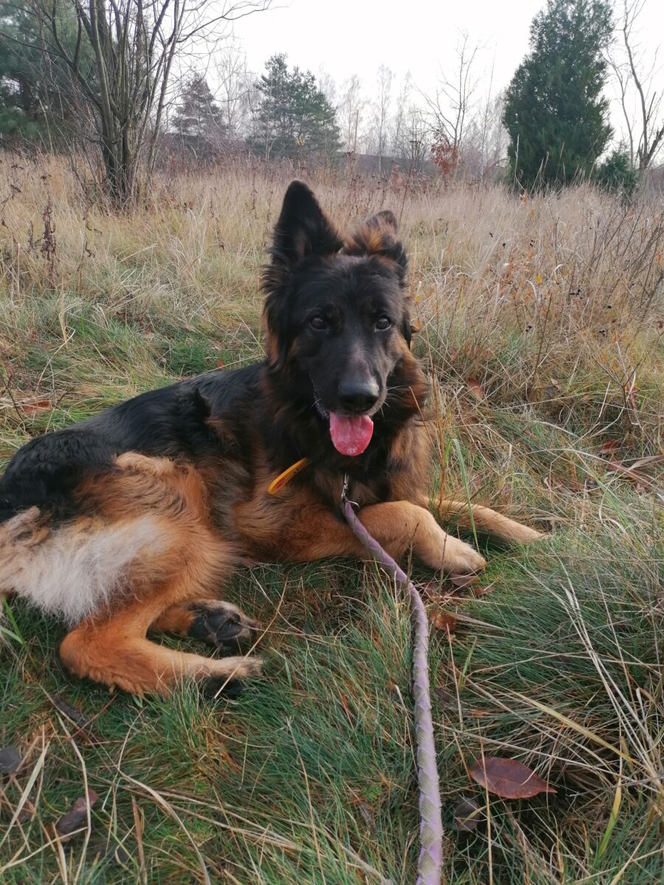
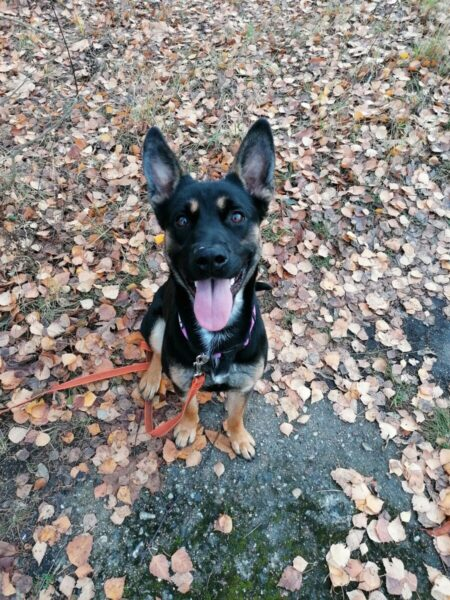

Nasze Psy
"Słoneczko"

Baster

Baster jest młodziutkim, rocznym psem. Jak na młodzika przystało, jest nieco nieokrzesany, ale pełen uroku i mega towarzyski. Uwielbia ludzi, zabawy, aportować i oczywiście jeść.
Baster jest zaczipowany (nr czipa 616096700086727) i wykastrowany.
Szukamy dla niego domu:
– aktywnego,
– gotowego na pracę z psem.
ENZO

Psiak ma prawie 4 lata. Dał się poznać jako bardzo proludzki pies, nie przejawia agresji wobec innych zwierząt, choć yorki nie przypadają mu do gustu. Uwielbia zabawki, a w szczególnie szarpaki. Zna komendę siad, daj łapę, leżeć. Nie pogardzi dobrym smakołykiem. Na spacerach ładnie mija psy, ludzi i rowery. Zachowuje czystość w domu.
Enzo jest zaszczepiony, wykastrowany i zaczipowany (616093900452466).
Dla Enzo szukamy domu:
– odpowiedzialnego
– znającego potrzeby psa
– bez małych dzieci
Aron

Aron uwielbia ludzi i swoim pogodnym charakterem kradnie serca każdej napotkanej osoby. Potrafi chodzić na smyczy, dużo węszy. Lubi coś nosić w pysku. Wyrywa się czasem do psów także potrzebuje silnego opiekuna. Pomimo, że nie podobny to prawdziwy z niego “francuski piesek” gdyż dość wybrednie podchodzi do proponowanych smakołyków. Aron ma biodra w znacznym stopniu dotknięte dysplazją i czeka go operacja, która pomoże mu po rehabilitacji dojść do lepszej sprawności. Pomimo swojej niepełnosprawności psiak zdaje się nie zwracać uwagi na wszelkie niedogodności z nią związane i to my opiekunowie musimy uważać na jego ruchy. Psiak niechętnie wraca do boksu i wypatruje już swojego człowieka.
Aron ma 5 lat, jest zaszczepiony, wykastrowany i zaczipowany (616096700086976).
Dla Arona szukamy domu:
– znającego specyfikę rasy owczarków niemieckich
– znającego potrzeby psa
– który pomoże Aronowi w dojściu do lepszej sprawności fizycznej
– bez innych zwierząt
– bez małych dzieci
Borówa

Borówka to ok. roczna i bardzo energiczna suczka w typie owczarka niemieckiego. Uwielbia intensywne zabawy, szczególnie szarpakiem. Spacery z nią są niekiedy wyzwaniem i pracy wymaga nauka chodzenia na smyczy. Pomimo to, psinka zawsze pilnuje się swojego opiekuna. Psy mija dość spokojnie. Odnajdzie się w psich sportach/aktywnościach.
Borówa jest zaszczepiona, wysterylizowana i zaczipowana (616096700086928).
Dla Borówy szukamy domu:
– bez małych dzieci
– aktywnego
– nastawionego na prace z psem i szkolenie
– rozumiejącego potrzeby psa